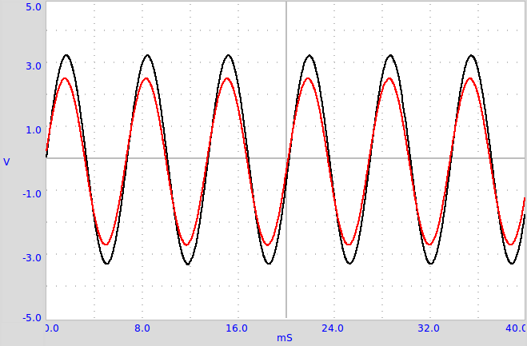
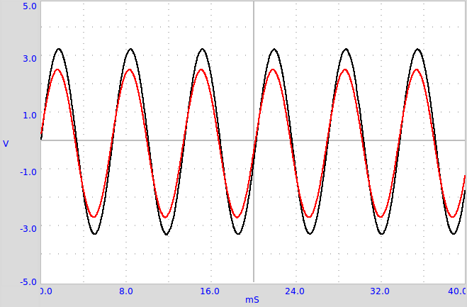

Résistance de l’eau, en courant alternatif¶
Objectif
Mesurer la résistance de solutions ioniques, en utilisant des signaux continu et alternatif. On utilise de l’eau ordinaire du robinet. Essayer de mesurer la résistance au préalable à l’aide d’un multimètre.
 

{kind=link}
Procédure
- R1 est censé être comparable avec R, On commence avec
 .
. - Activer A1 et A2
- Calculer la résistance comme expliqué à la section 2.4↑
Discussion
Les valeurs observées sont montrées dans le tableau. Les résistances en continu et en alternatif semblent très différentes. En courant continu, la résistance du liquide change au cours du temps, à cause d’une électrolyse et de la formation de bulles. La résistance dépend peu de la distance entre électrodes, c’est la surface de l’électrode qui a le plus d’effet. La résistance dépend de la concentration en ions et à la présence d’impuretés dans l’eau.
Essayer de changer la distance entre électrodes. Essayer d’ajouter un sel ordinaire et recommencer les mesures. Pourquoi le comportement est-il différence en courant continu ou alternatif ? Quels sont les porteurs de charges responsables du flux d’électricité à travers les solutions ? Y a-t-il une réaction chimique qui se produit ?